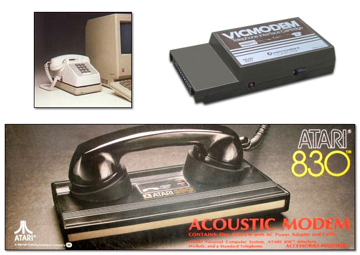
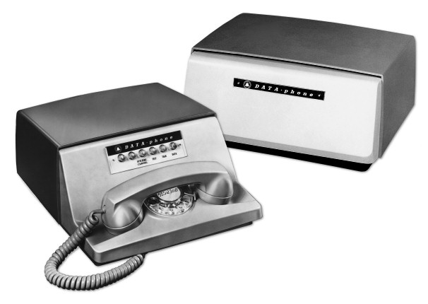
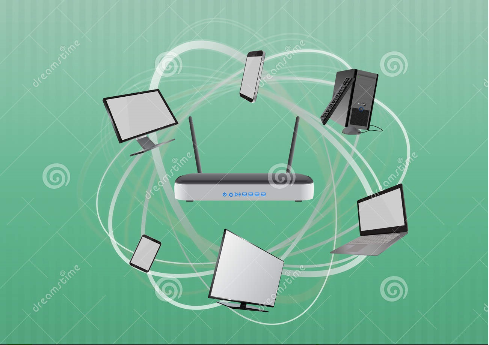

WHAT ARE MODEMS?
A modem (modulator-demodulator) is an external or internal network hardware device that modulates one or more carrier wave signals to encode digital information for transmission and demodulates signals to decode the transmitted information. It aims to produce a signal that can be transmitted easily and decoded to reproduce the original digital data. And the word ""modem"" is short for ""modulator-demodulator"" which is essentially what it does.
A computer moves data around on parallel wires by applying one or another voltage to each wire (representing 0's and 1's) and the voltage is read at the other end of the wires. This is digital communication. In order for multiple computers to communicate over greater distances, a method was developed to exchange data over a world-wide pre-existing network: the telephone network. Telephone transmissions are analog in nature. Instead of streaming ones and zeroes with varying voltage over multiple parallel wires, signals are sent as analog wave frequencies (sounds) over a single wire.
What the modem does is translate the data that is sent to it so that it can display on the computer. Computer information is stored digitally, however information sent over phone and cable lines are analog waves. So the modem takes the analog waves, changes it to digital and delivers it to the computer. In other words, the modem will connect you to the internet so that you can watch videos, upload videos, check emails, play on Facebook and anything else through online.